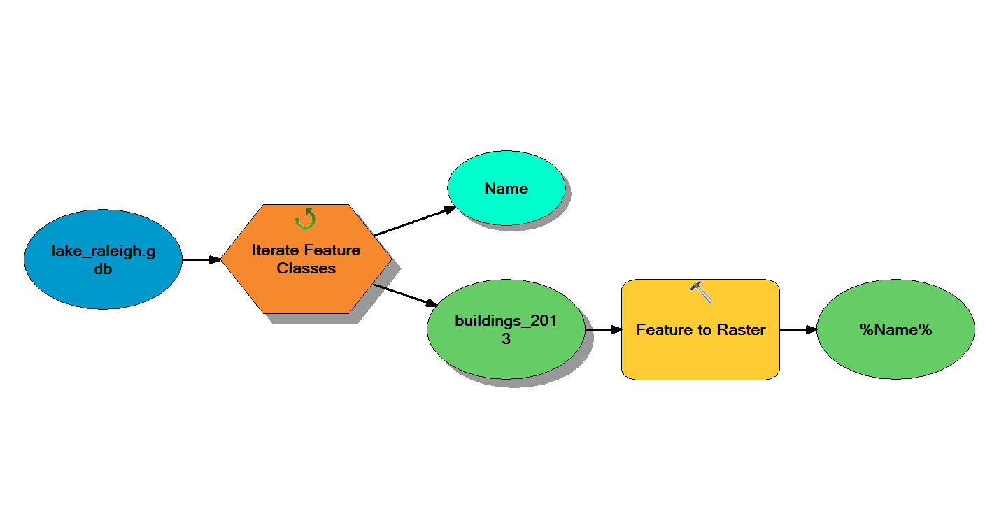

Conversion
Data
Download lake_raleigh.gdb and intermediate_data.gdb from ClassStore
Prepare data for overlay analysis
Geoprocessing options
Check 'Geoprocessing -> Geoprocessing Options... -> Overwrite the outputs of geoprocessing operations'
Environment settings
In ArcToolbox Right click in the white space of the ArcToolbox pane and select 'Environments…' Set 'Workspace -> Current Workspace' to 'lake_raleigh.gdb' Set 'Workspace -> Scratch Workspace' to 'intermediate_data.gdb' Set 'Processing Extent -> Extent' to 'Same as layer lake_raleigh_dem' Set 'Processing Extent -> Snap Raster' to 'lake_raleigh_dem' Set 'Raster Analysis -> Cell Size' to 'same as lake_raleigh_dem' Check 'Raster Storage -> Pyramid -> Build pyramids' Set 'Raster Storage -> Pyramid -> Pyramid resampling technique' to 'NEAREST' Set 'Raster Storage -> Resampling Method' to 'NEAREST'
Buffer polylines to create polygons
Buffer 'streets_2014' by 10 feet
In ArcToolbox Select 'Analysis -> Proximity -> Buffer' Set 'Input Features' to 'streets_2014' Set 'Linear unit' to '10' with 'Feet' selected as the unit Set 'Output Feature Class' to 'streets_2014_buffer_10ft'
Buffer 'greenways_2014' by 5 feet
In ArcToolbox Select 'Analysis -> Proximity -> Buffer' Set 'Input Features' to 'greenways_2014' Set 'Linear unit' to '5' with 'Feet' selected as the unit Set 'Output Feature Class' to 'greenways_2014_buffer_5ft'
Buffer 'hydrology_2013' by 5 feet
In ArcToolbox Select 'Analysis -> Proximity -> Buffer' Set 'Input Features' to 'hydrology_2013' Set 'Linear unit' to '5' with 'Feet' selected as the unit Set 'Output Feature Class' to 'hydrology_2013_buffer_5ft'
Buffer 'major_streams_2011' by 10 feet
In ArcToolbox Select 'Analysis -> Proximity -> Buffer' Set 'Input Features' to 'major_streams_2011' Set 'Linear unit' to '10' with 'Feet' selected as the unit Set 'Output Feature Class' to 'major_streams_2011_buffer_10ft'
Buffer 'lake_raleigh' by 15 feet
In ArcToolbox Select 'Analysis -> Proximity -> Buffer' Set 'Input Features' to 'lake_raleigh' Set 'Linear unit' to '15' with 'Feet' selected as the unit Set 'Output Feature Class' to 'lake_raleigh_buffer_15ft' Set 'Side Type' to 'OUTSIDE_ONLY'
Use model builder to loop through the geodatabase to convert vector data to raster

Create a toolbox
In ArcToolbox Right click in the white space of the ArcToolbox pane and select 'Add Toolbox...' Browse to 'lake_raleigh.gdb' and click to 'Add Toolbox' icon Name the new toolbox 'Geodesign' and select 'Open'
Create a model
Right click on the Geodesign toolbox and select 'New -> Model...' In the model builder window click on the 'model' menu Using 'Model->Save As...' save the model as 'Vector to Raster Iterator'
Set the model environment settings
Right click in the white space of the model builder window and select 'Model Properties...' In the 'Environments' tab check 'Processing Extent,' 'Raster Analysis,' 'Raster Storage,' and 'Workspace'
Create an iterator
Right click in the white space of the model builder window and select 'Iterators -> Feature Classes' Double click 'Iterate Feature Classes' Set 'Workspace or Feature Dataset' to 'lake_raleigh.gdb'
Add a tool
In ArcToolbox Drag 'Conversion -> To Raster -> Feature to Raster' to the model In model builder use the 'Connect' tool to connect the 'Iterate Feature Classes' output to the 'Feature to Raster' tool as 'Input features' Double click 'Feature to Raster' Set 'Field' to 'FTR_CODE' Set 'Ouput Feature Class' to the variable '%Name%'
Nota bene: Only features with an FTR_CODE will be converted. To convert the remaining features follow the steps below.
Convert 'floodplain_2006' using Polygon to Raster
Review the attribute table for 'floodplain_2006' Refer to http://www.fema.gov/floodplain-management/flood-zones In ArcToolbox Select 'Conversion -> To Raster -> Polygon to Raster' Set 'Input Features' to 'floodplain_2006' Set 'Value field' to 'FLOODZONE' Set 'Output Raster Dataset' to 'floodplain_2006'
Convert 'streets_2014_buffer_10ft' using Polygon to Raster
Review the attribute table for 'streets_2014' In ArcToolbox Select 'Conversion -> To Raster -> Polygon to Raster' Set 'Input Features' to 'streets_2014_buffer_10ft' Set 'Value field' to 'STYPE' Set 'Output Raster Dataset' to 'streets_2014'
Convert 'greenways_2014_buffer_5ft' using Polygon to Raster
Review the attribute table for 'greenways_2014' In ArcToolbox Select 'Conversion -> To Raster -> Polygon to Raster' Set 'Input Features' to 'greenways_2014_buffer_5ft' Set 'Value field' to 'FAC' Set 'Output Raster Dataset' to 'greenways_2014'
Convert 'hydrology_2013' using Polygon to Raster
Review the attribute table for 'hydrology_2013' In ArcToolbox Select 'Conversion -> To Raster -> Polygon to Raster' Set 'Input Features' to 'hydrology_2013_buffer_5ft' Set 'Value field' to 'FTYPE' Set 'Output Raster Dataset' to 'hydrology_2013'
Convert 'major_streams_2011_buffer_10ft' using Polygon to Raster
Review the attribute table for 'major_streams_2011' In ArcToolbox Select 'Conversion -> To Raster -> Polygon to Raster' Set 'Input Features' to 'major_streams_2011_buffer_10ft' Set 'Value field' to 'FTYPE' Set 'Output Raster Dataset' to 'major_streams_2011'
Convert 'hydrology_areas_2013' using Polygon to Raster
Review the attribute table for 'hydrology_areas_2013' In ArcToolbox Select 'Conversion -> To Raster -> Polygon to Raster' Set 'Input Features' to 'hydrology_areas_2013' Set 'Value field' to 'DESCRIPTIO' Set 'Output Raster Dataset' to 'hydrology_areas_2013'
Convert 'lake_raleigh' using Polygon to Raster
In ArcToolbox Select 'Conversion -> To Raster -> Polygon to Raster' Set 'Input Features' to 'lake_raleigh' Set 'Value field' to 'OBJECTID' Set 'Output Raster Dataset' to 'lake_raleigh'
Convert 'lake_raleigh_buffer_15ft' using Polygon to Raster
In ArcToolbox Select 'Conversion -> To Raster -> Polygon to Raster' Set 'Input Features' to 'lake_raleigh_buffer_15ft' Set 'Value field' to 'OBJECTID' Set 'Output Raster Dataset' to 'lake_raleigh_buffer'
Convert 'soils_2013' using Polygon to Raster
In ArcToolbox Select 'Conversion -> To Raster -> Polygon to Raster' Set 'Input Features' to 'soils_2013' Set 'Value field' to 'MUSYM' Set 'Output Raster Dataset' to 'soils_2013'